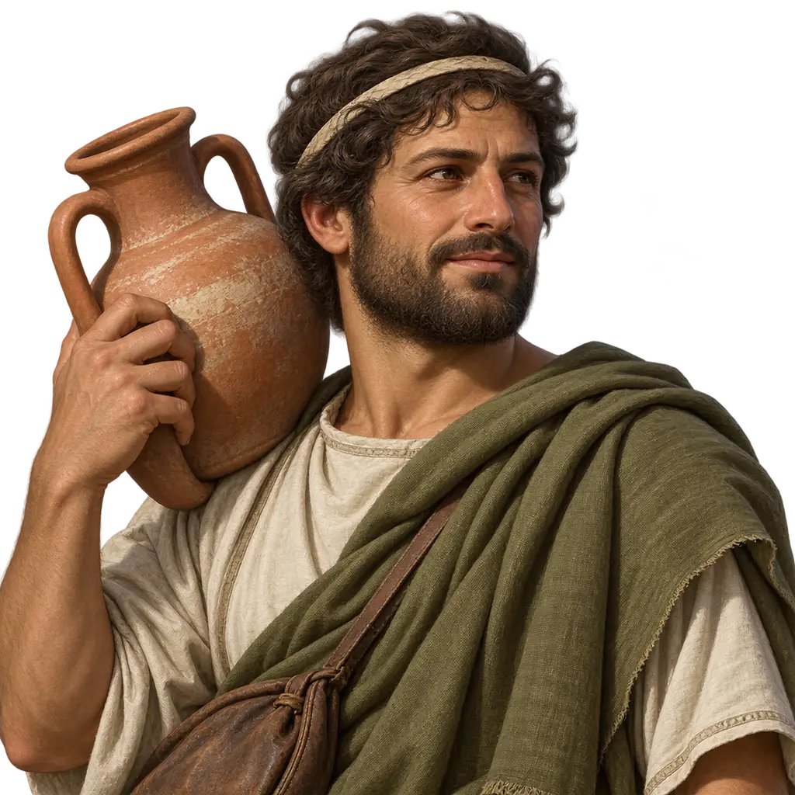
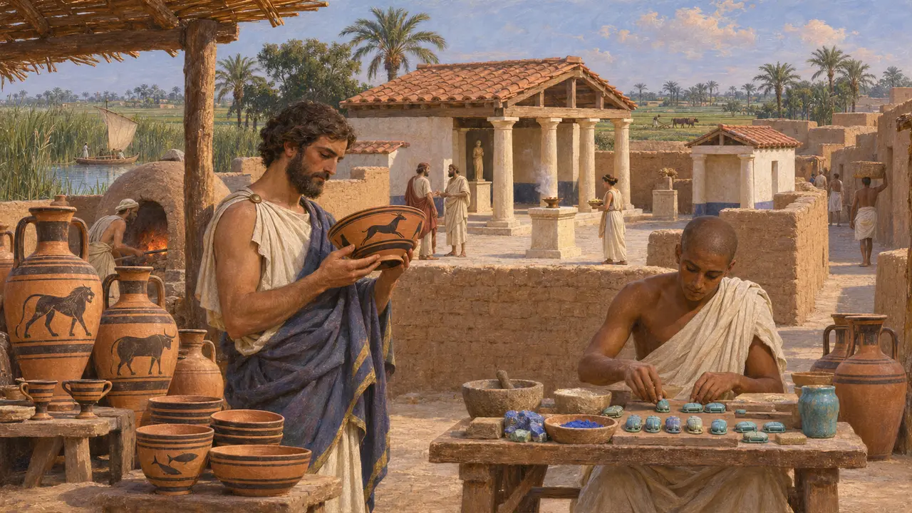
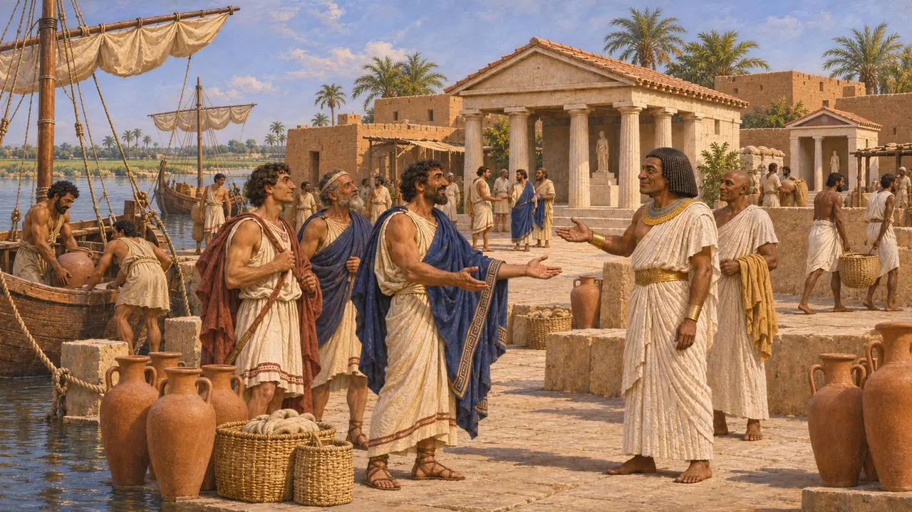
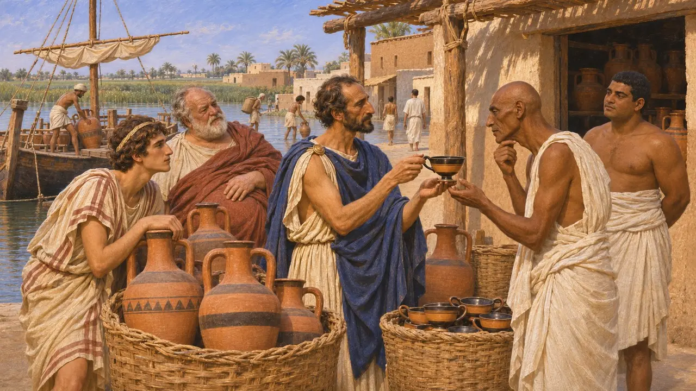
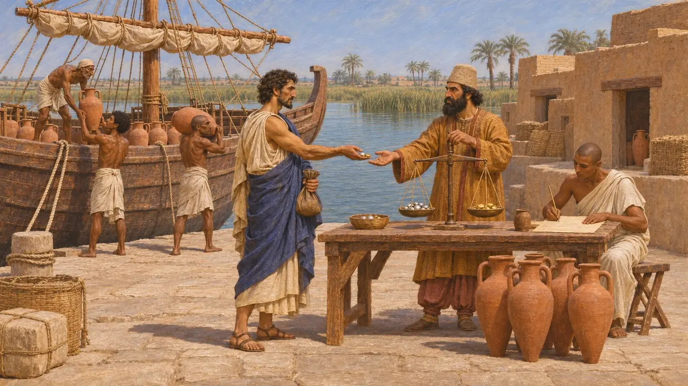
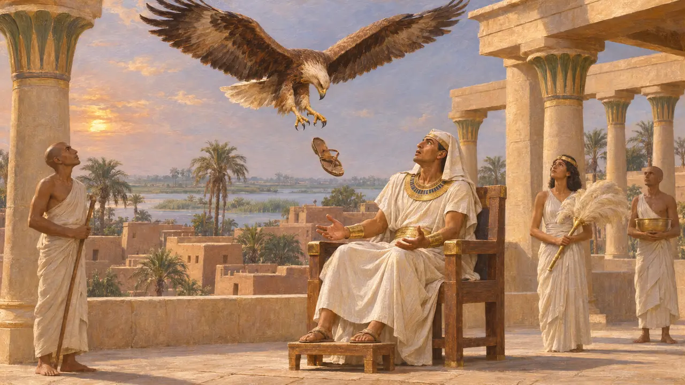
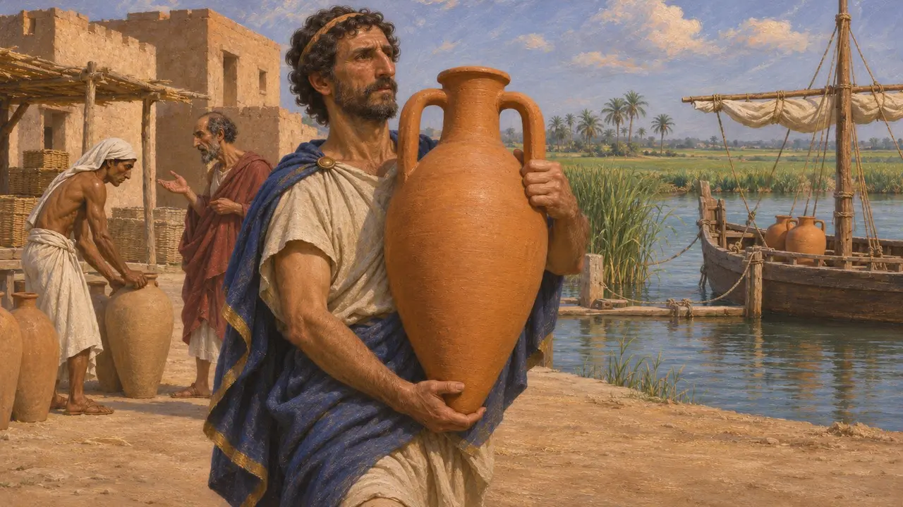

يونانيو نوكراتيس
تجار يونانيون استقروا في نوكراتيس غربي دلتا النيل، منذ نحو 620 ق.م
في اللعبة: المستوى 2: حامل الرمح
كانت نوكراتيس بلدة تجارية على الفرع الكانوبي للنيل، عاش فيها تجار من مدن يونانية كثيرة إلى جانب المصريين. ومرّت عبرها الفضة والنبيذ والزيت من بلاد اليونان، والحبوب والكتّان والنطرون من مصر. وحين فتح قمبيز مصر سنة 525 ق.م، دخلت البلدة وتجارها تحت الحكم الفارسي وواصلوا عملهم.
في اللعبة: في مرحلة منف يظهر يونانيو نوكراتيس شريكًا تجاريًا. أما نوكراتيس نفسها فكانت تقع في غرب الدلتا أسفل منف مع مجرى النهر، ولذلك تربطهم اللعبة بمنف بالتجارة لا بالمكان.

المدينة المنقَّب عنها
في السجلاتحدّد فلندرز بتري الموقع قرب كوم جعيف الحالية عام 1884 ونقّب فيه، ثم واصل إرنست غاردنر العمل في 1885-86. وعثرا على فخار يوناني يعود إلى نحو عشرينيات القرن السابع ق.م فصاعداً، وعلى حرم لأبولو وأفروديت والديوسكوري، وورشة لصنع جعارين من القيشاني. ثم حدّد د. ج. هوغارث لاحقاً موقع الهيلينيون، الحرم اليوناني المشترك، وحرم هيرا. وتحمل مئات الأواني إهداءات يونانية مرسومة أو محفورة.
W. M. F. Petrie, Naukratis I, 1886; A. Villing et al., Naukratis: Greeks in Egypt, British Museum, 2013

هيرودوت عن هدية أماسيس
رواية قديمةيذكر هيرودوت أن الفرعون أمازيس منح اليونانيين نوكراتيس موطنًا للسكنى والتجارة. ويعدّد تسع مدن من شرق العالم اليوناني اشتركت في معبد الهيلينيون، منها خيوس ورودس وفوكايا وهاليكارناسوس، في حين احتفظت إيجينا وساموس وميليتوس بمعابد خاصة بها. ويضيف أن نوكراتيس كانت في وقت ما الميناء الوحيد المفتوح للسفن اليونانية في مصر.
Herodotus 2.178-179

من أسّسها ومتى
متنازع عليهيدلّ الفخار على وجود اليونانيين في نوكراتيس قبل أن يبدأ أحمس حكمه عام 570 ق.م بزمن طويل، وربما في عهد بسماتيك الأول. ويرى معظم المؤرخين أن أحمس أعاد تنظيم مستوطنةٍ قائمة أصلًا وقيّدها. وما زالوا يختلفون في مدى سيطرة الفراعنة على تجارتها وفي القدر الذي تُرك منها للمدن اليونانية.
A. Möller, Naukratis: Trade in Archaic Greece, 2000

سجلّ جمارك في عهد خشايارشا
في السجلاتتسجّل بردية آرامية عُثر عليها في إلفنتين، وأُعيد استخدامها لاحقًا لنصّ آخر، الرسومَ الجمركية المأخوذة نحو سنة 475 ق.م من السفن الداخلة إلى مصر. فقد دفعت السفن الأيونية رسومًا من الذهب والفضة وحصة من حمولاتها كالزيت والنبيذ. ويدلّ ذلك على استمرار التجارة اليونانية في ظلّ الموظفين الفرس. ولا يذكر النصّ الباقي اسم الميناء، ويختلف الباحثون في ما إذا كان نوكراتيس أم ميناءً آخر في الدلتا.
B. Porten and A. Yardeni, Textbook of Aramaic Documents from Ancient Egypt, vol. 3, 1993 (TAD C3.7); P. Briant, From Cyrus to Alexander, 2002

رودوبيس والصندل
أسطورة لاحقةيروي هيرودوت خبر رودوبيس، وهي محظية تراقية كانت مملوكة لإيادمون الساموسي، ثم أعتقها خاراكسوس أخو الشاعرة سافو، فعاشت في نوكراتيس. ويضيف سترابون، الذي كتب بعد زمنها بنحو خمسة قرون، أن نسرًا اختطف صندلها وألقاه في حجر ملك في منف، فبحث عنها ذلك الملك وتزوجها. والحكاية قصة خيالية لا تاريخ.
Herodotus 2.134-135; Strabo 17.1.33

الشعار بجانب الاسم
متنازع عليهيحمل يونانيو نوكراتيس دَنًّا يونانيًا لنقل البضائع، إشارةً إلى الميناء التجاري في الدلتا الذي منحهم إياه أماسيس. ولم تسكّ المدينة حينها عملة خاصة بها؛ فالجرّة ترمز إلى التجارة التي يصفها هيرودوت.
Herodotus 2.178-179
المصادر
- Herodotus 2.178-179
- W. M. F. Petrie, Naukratis I, 1886
- A. Möller, Naukratis: Trade in Archaic Greece, 2000
- A. Villing et al., Naukratis: Greeks in Egypt, British Museum, 2013
- B. Porten and A. Yardeni, Textbook of Aramaic Documents from Ancient Egypt, vol. 3, 1993
- P. Briant, From Cyrus to Alexander, 2002